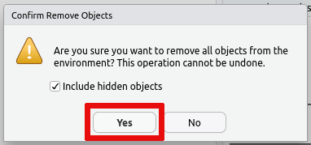
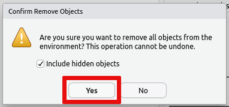

RStudio: Incorrect or invalid username/password¶
Please make sure that you are entering your username in the short form
and that you have been added as a member of the SRV-esrumcont-users
group (see above). If the problem persists, please Contact us
for assistance.
RStudio: Logging in takes a very long time¶
Similar to regular R, RStudio will automatically save the data you have loaded into your R session and will restore it when you return later, so that you can continue your work. However, this many result in large amounts of data being saved and loading this data may result in a large delay when you attempt to login at a later date.
It is therefore recommended that you regularly clean up your workspace using the built in tools, when you no longer need to have the data loaded in R.
You can remove individual bits of data using the rm function in R.
This works both when using regular R and when using RStudio. The
following gives two examples of using the rm function, one removing
a single variable and the other removing all variables in the current
session:
# 1. Remove the variable `my_variable`
rm(my_variable)
# 2. Remove all variables from your R session
rm(list = ls())
Alternatively you can remove all data saved in your R session using the
broom icon on the Environment tab:
 

If you wish to prevent this issue in the first case, then you can also
turn off saving the data in your session on exit and/or turn off loading
the saved data on startup. This is accomplished via the Global
Options... accessible from the Tools menu:
Should your R session have grown to such a size that you simply cannot login and clean it up, then it my be necessary to remove the files containing the data that R/RStudio has saved. This data is stored in two locations:
In the
.RDatafile in your home (~/.RData). This is where R saves your data if you answer yesSave workspace image? [y/n/c]when quitting R.In the
environmentfile in your RStudio session folder (~/.local/share/rstudio/sessions/active/session-*/suspended-session-data/environment). This is where Rstudio saves your data should your login time-out while using RStudio.
Please Contact us and we can help you remove the correct files.
Jupyter Notebooks: Browser error when opening URL¶
Depending on your browser you may receive one of the following errors. The typical causes are listed, but the exact error message will depend on your browser. It is therefore helpful to review all possible causes listed here.
When using Chrome, the cause is typically listed below the line that says "This site can't be reached".
"The connection was reset"
This typically indicates that Jupyter Notebook isn't running on the server, or that it is running on a different port than the one you've forwarded. Check that Jupyter Notebook is running and make sure that your forwarded ports match those used by Jupyter Notebook on Esrum.
"localhost refused to connect" or "Unable to connect"
This typically indicates that port forwarding isn't active, or that you have entered the wrong port number in your browser. Verify that port forwarding is active and that you are using the correct port number in the
localhostURL."Check if there is a typo in esrumcont01fl" or "We're having trouble finding that site"
You are must likely connecting from a network outside of KU. Make sure that you are using a wired connection at CBMR and/or that the VPN is activated and try again.